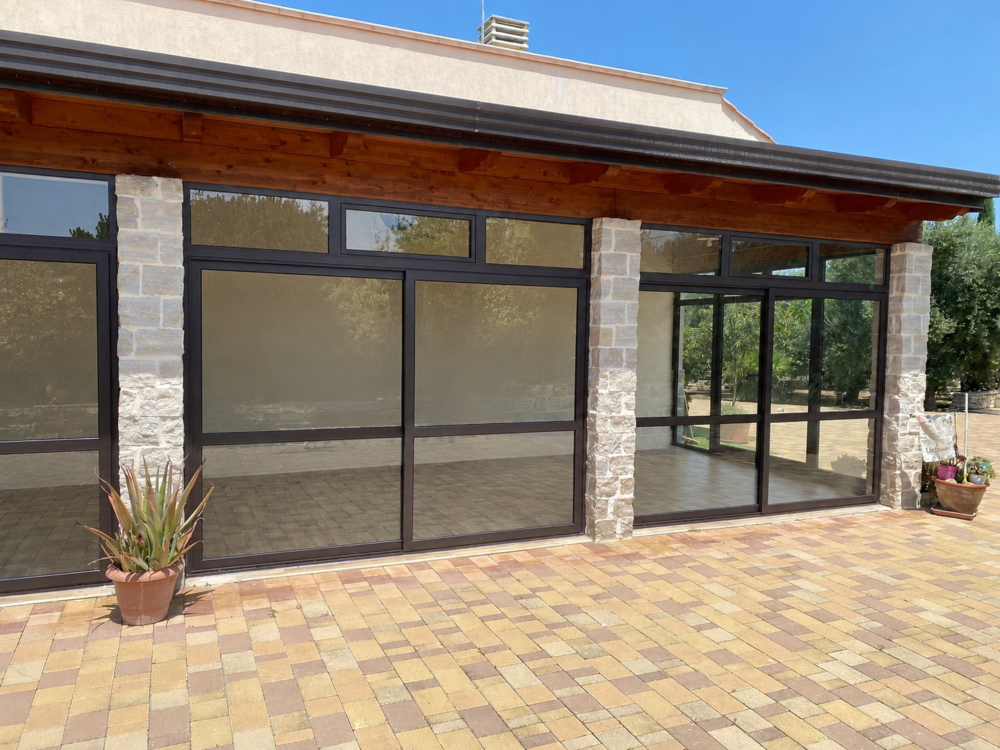
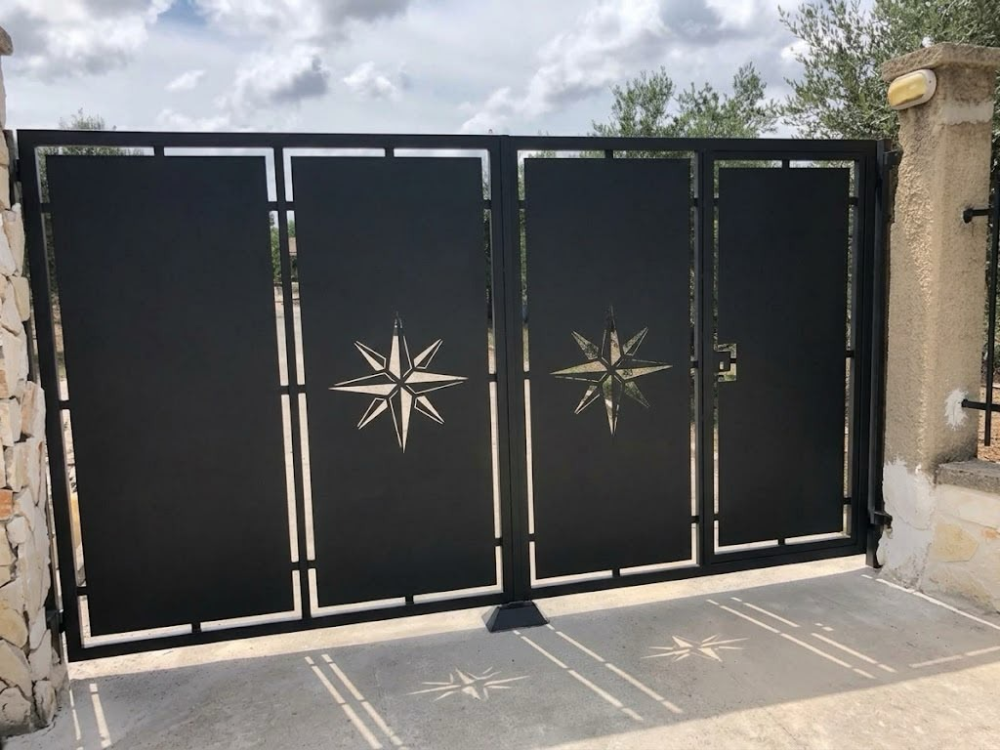

Sopralluogo
Veniamo da te, vediamo gli spazi e prendiamo le misure. È gratuito e senza impegno.

Infissi, cancelli e ringhiere su misura
Dal sopralluogo alla posa in opera: serramenti, portoncini, cancelli e verande progettati e costruiti per la tua casa.
Nella foto: veranda in alluminio e pietra
Cosa facciamo
Ogni lavoro nasce da una misura presa in cantiere e si chiude con la posa. Scegli una categoria per vedere le realizzazioni.
Realizzazioni
Caricamento…

Chi siamo
Fabbro e Serramenti De Ceglia - De Pinto realizza e installa infissi, portoncini, cancelli e ringhiere, curando ogni fase: dal sopralluogo alla progettazione, fino alla posa in opera.
Lavoriamo alluminio, PVC e ferro battuto per offrire soluzioni solide e sicure, con un occhio attento ai dettagli e alla qualità dei materiali.
Come lavoriamo
Veniamo da te, vediamo gli spazi e prendiamo le misure. È gratuito e senza impegno.
Ti proponiamo materiali, finiture e costi in modo chiaro, così scegli sapendo tutto.
Il lavoro viene costruito su misura, con alluminio, PVC o ferro battuto secondo il progetto.
Installiamo e rifiniamo con cura: consegniamo il lavoro finito, pronto da usare.
Contatti
Raccontaci il progetto: ti rispondiamo al più presto con una proposta su misura.